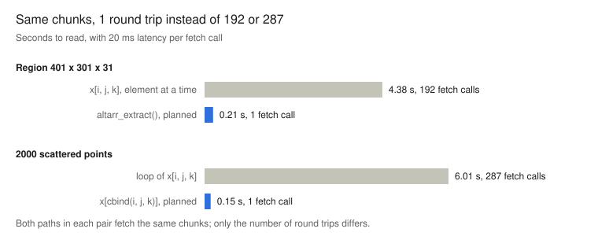

Base R can already read a remote, chunked, compressed array in planned batches, using nothing but its own indexing syntax. The object has no class and no methods: it is a double vector with a dim attribute. One of R’s indexing forms reaches it as a single planned request today; another reaches it one element at a time; and a small change to R would close that gap.
I wanted to know how far R’s old and very rich array indexing could go as a query language for remote encoded chunks, without patching R. So I built altarr, a small ALTREP prototype, read through src/main/subset.c to see what each indexing form actually does, and measured it. Then I pointed it at a real Zarr store written by zarr-python.
The short version: x[cbind(i, j, k)] is already first-class. x[i, j, k] works, but serially. And the information R would need to fix that is already sitting in a local variable inside ArraySubset.
Two kinds of array question
There are two different things you can ask of a 3-d array with three index vectors. The orthogonal question asks for every combination: a hyperslab, the outer product of the indices. The pointwise question pairs the indices up: the first i with the first j with the first k, giving one value per point. A chunked store cares a lot about which one you mean, because they touch completely different sets of chunks.
R and numpy chose opposite defaults:
| R | numpy | zarr-python | |
|---|---|---|---|
| orthogonal (hyperslab) | x[i, j, k] |
x[np.ix_(i, j, k)] |
z.oindex[i, j, k] |
| pointwise (points) | x[cbind(i, j, k)] |
x[i, j, k] with integer arrays |
z.vindex[i, j, k] |
Zarr grew two named accessors, oindex and vindex, to say what S and R have said in base syntax for decades. xarray meets the same split as orthogonal versus vectorized isel. I checked the table against a real store: on the Zarr array used later in this post, z.vindex[[29, 14], [49, 24], [69, 34]] and R’s x[cbind(c(70, 35), c(50, 25), c(30, 15))] both return 104999 50714, and z.oindex returns the same 8 values as R’s x[i, j, k]. (The R indices are reversed and 1-based; more on why below.)
Matrix indexing is one of the least appreciated parts of R. It long predates lazy evaluation in most of the places people now care about it, and as it turns out, it is exactly the form that reaches a lazy array as a single, plannable request.
What R does with it
ALTREP (since R 3.5) lets a package supply a vector whose contents come from somewhere other than a block of memory. The package registers methods: Length, Elt for one element, Extract_subset for a set of indices, Dataptr for a pointer to all the data. R’s own code calls them instead of reading memory. To R, the result is just a vector.
So what happens when that vector has a dim attribute and you index it? Reading src/main/subset.c (R 4.3 and current trunk have the same structure), there are three paths:
| you write | R calls | the ALTREP object sees | can it plan? |
|---|---|---|---|
x[i] |
VectorSubset then ExtractSubset |
Extract_subset(x, indx), every index at once |
yes |
x[cbind(i, j, k)] |
mat2indsub then ExtractSubset |
Extract_subset(x, indx), every index at once |
yes |
x[i, j, k] |
ArraySubset or MatrixSubset |
Elt(x, offset), one element at a time |
no |
x + 1, print(x) |
anything needing the data pointer | Dataptr(x) |
must materialize |
Matrix indexing is converted to linear indices before it reaches ALTREP, but the whole set arrives in one call. That is enough: the object can recover each index’s chunk, find the unique chunks, and fetch them together.
The rectangular form is the surprise. ArraySubset normalizes each subscript with int_arraySubscript() and holds the result in a local array, subs[k]: one integer vector per dimension. That is the hyperslab, exactly. But it never offers subs to ALTREP. It loops over the result in column-major order and calls REAL_ELT() once per element.
altarr: the experiment
altarr is a small R package with a C core. altarr(dim, chunk, fetch) returns a lazy array: a double vector, a dim attribute, no class. Values arrive chunk by chunk from a fetch function you supply, so the store behind it can be object storage, Zarr, GDAL, or a generator in a test.
The whole contract with the store is one function:
fetch(chunks)
# chunks: integer matrix, one row per chunk, one column per dimension,
# 0-based chunk coordinates
# returns: list of numeric vectors, one per row, column-major,
# clipped at the array edgeA call to fetch is one round trip, however many chunks it asks for. The ALTREP methods do the rest:
Eltfinds the element’s chunk, fetches it alone if it is not cached, and returns one value.Extract_subsetmaps every index to its chunk, fetches all the uncached chunks in one call, then assembles.Dataptrmaterializes the whole array, and refuses abovegetOption("altarr.max_materialize", 1e6)values.
Here is a lazy 1440 x 720 x 365 array (378 million values, never allocated) from a generator with 20 ms of latency per call:
library(altarr)
d <- c(1440L, 720L, 365L)
cs <- c(60L, 60L, 10L)
remote <- function(chunks) {
Sys.sleep(0.02) # one round trip
lapply(seq_len(nrow(chunks)), function(r) {
st <- chunks[r, ] * cs + 1L
en <- pmin(st + cs - 1L, d)
as.vector(outer(outer(st[1]:en[1], 1e4 * (st[2]:en[2]), "+"),
1e8 * (st[3]:en[3]), "+"))
})
}
x <- altarr(d, cs, remote)
class(x) # "array"
is.object(x) # FALSE
altarr_stats(x) # counts Elt calls, fetch calls, chunksaltarr_stats() counts what R actually asked for, which is how the numbers below were measured.
Measured
On the 378-million-value array, the planned paths read the same chunks as the element-at-a-time paths in a single round trip, and are 20 to 40 times faster.

inst/examples/three-paths.R in altarr, R 4.3.3, simulated 20 ms latency per fetch call.The latency stands in for an object-store GET, with a batch of chunks assumed to be fetched concurrently. A linear slice, x[1:1e5], also goes through Extract_subset: 48 chunks in 1 call. Point extraction through x[cbind(...)] is already first-class in unpatched R; the rectangular form is correct and lazy, but serial.
A real Zarr store
A generator proves the mechanics; a real store proves the contract is enough. zarr-python wrote a Zarr v2 array of shape (30, 50, 70), chunks (7, 16, 20), zlib-compressed, C order. The chunk shape is ragged at every edge, and one chunk is entirely fill value, so the store simply omits its file.
altarr_zarr_v2() reads .zarray and implements fetch in about 85 lines of plain R: build the chunk key, read the file (or return fill_value if it is missing), memDecompress(), readBin(), and clip Zarr’s padded edge chunks.
z <- altarr_zarr_v2("zdemo.zarr")
dim(z) # 70 50 30
z[cbind(c(70, 35), c(50, 25), c(30, 15))] # 104999 50714, one fetch call
altarr_extract(z, , , ) # every value, one fetch callEvery value matches zarr-python’s array exactly, including the omitted chunk and the clipped edges.
The dimensions come out reversed, and that is deliberate. A C-order array of shape (s1, …, sn) has bytes that are already column-major for shape (sn, …, s1). So altarr gives R dim c(70, 50, 30) and decodes each chunk straight into place, with no transposition at all. R’s x[i, j, k] on that array is zarr’s z.oindex[k, j, i], shifted by one.
A real dataset, with GDAL doing the hard parts
The zarr-python store keeps the package self-contained. For real data, the classic xarray tutorial air_temperature dataset is published as Zarr over HTTP, compressed with Blosc. A Blosc decoder and an HTTP range-reader are exactly the things altarr should not grow, so GDAL does both in one command:
gdal mdim convert \
"ZARR:\"/vsicurl/https://scottyhq.github.io/zarrdata/air_temperature.zarr/\"" \
air_temperature.zarr --co FORMAT=ZARR_V2 --co ARRAY:COMPRESS=ZLIBThe result is a local, zlib-compressed Zarr v2 store, and the same reader opens it:
x <- altarr_zarr_v2("air_temperature.zarr/air")
dim(x) # 53 x 25 x 2920: lon, lat, time
# int16, chunks 27 x 13 x 730, 16 of them
x[20, 10, ] # a time series at one cell, in kelvin
# orthogonal: Elt path, 4 chunks in 4 round trips
altarr_extract(x, 20, 10, ) # the same 4 chunks in 1 round trip
x[cbind(lon_i, lat_i, time_i)] # a track, one time per position
# pointwise: one planned batchThose are the two questions from the start of this post, on real data. The time series sits under one cell, so it touches the 4 time chunks there: 4 round trips today, 1 with the hook. A 500-point track spread over the year touches all 16 chunks, and already arrives as a single request.
air is stored as int16 with a scale factor of 0.01. altarr_zarr_v2() applies the CF packing attributes from .zattrs (scale_factor, add_offset, _FillValue) inside fetch, so values arrive in kelvin and fill values become NA. Unpacking is a concern of the fetch, not of the ALTREP layer.
This is also the point to resist building a Zarr engine. Remote I/O, Blosc, sharding, Zarr v3 codecs and their combinations are a never-ending road, and every step along it is a detour from the question here. The fetch contract exists so the engine can be someone else’s: GDAL as a converter in this example, and the natural next step is a fetch that calls GDAL’s multidimensional API, or object_store and the Rust codec crates, directly. The ALTREP layer only needs chunk coordinates in and values out.
What comes for free
Because the object is an ordinary vector to R, a lot of behaviour arrives without any code:
- Shape is free.
dim(),length()andstr()read nothing. - Copy-on-modify works.
y <- x; y[1, 1, 1] <- 0materializesyonly;xstays lazy and unchanged. - R’s own wrapper keeps the planning. Changing an attribute on a shared object (
dimnames(y) <- ...aftery <- x) makes R wrap it in its internalwrapperALTREP class. The wrapper forwardsExtract_subset, so matrix indexing still arrives as one planned request. - Serialization stores the recipe, not the payload. ALTREP has a
Serialized_statemethod, sosaveRDS()of the 378-million-value array writes 1250 bytes: dim, chunk shape and fetch function. For the Zarr array it is 3.7 KB, andreadRDS()in a fresh R session loads the package and returns a lazy array that reads from the store on first use. - The plan is a table.
altarr_plan(x, i, j, k)returns the chunks a subscript would touch, one row per chunk, with 0-based chunk coordinates, starts and extents. The plan is a table, and the array is what assembling it gives you.
That last point connects to an older thread. A chunk manifest (Icechunk’s, kerchunk’s, a COG’s tile index) is already a table of chunk keys to byte ranges. Chunk extents are min/max statistics for free, so filtering that table on coordinates is chunk pruning without anyone computing statistics.
The hook R could add
ExtractSubset already does this for vectors: if the object is ALTREP, it offers the indices to the class’s Extract_subset method first, and falls back to the element loop only if the method returns NULL. The same pattern would fit in ArraySubset and MatrixSubset, just after the subscripts are normalized and bounds-checked:
if (ALTREP(x)) {
SEXP ans = ALTVEC_EXTRACT_ARRAY_SUBSET(x, s, call); /* s: per-dim subs */
if (ans != NULL) {
/* attach dim and dimnames exactly as the existing code does */
}
}
/* otherwise the element loop runs, as today */The new method receives one normalized integer vector per dimension. Returning NULL keeps today’s behaviour, so nothing changes for any class that does not implement it.
altarr_extract(x, i, j, k) emulates this from package code: it normalizes each subscript with R’s own rules (by indexing a seq_len() of each dimension), plans the cartesian product of touched chunks, fetches once, and assembles. Its results are identical() to x[i, j, k] across negative, logical, character, NA, missing and zero-length subscripts, with and without drop.
The argument for the hook is that it is general. It adds no data model and no new object type, and every lazy array in R benefits: arrow, gdalraster, Zarr readers, anything ALTREP-backed with a shape.
Prior art, and what is different
Out-of-memory arrays in R are not new, and some of the older work was remarkably capable:
- ff gave R memory-mapped, chunked vectors and arrays long before most languages had anything comparable, with its own
[methods doing the paging. - bigmemory offered shared and file-backed matrices for parallel work.
- DelayedArray and HDF5Array in Bioconductor provide lazy, chunk-aware arrays with block processing and delayed operations, and are the most complete answer to lazy compute on arrays in R.
- arrow and vroom use ALTREP to hand R vectors whose contents are not yet in R memory.
The difference here is the class. Every one of the array packages above is an S3 or S4 object with methods: code has to know about the class, or the object gets converted. An ALTREP array with a dim and no class needs no method dispatch at all. Any function that indexes a numeric array, written in 1998 or yesterday, reads it lazily, and matrix indexing reads it in one planned batch.
That is also the limit. Without a class there is nowhere to hang delayed arithmetic, which is where DelayedArray’s design earns its complexity. The two approaches fit together: lazy reads through base indexing underneath, lazy compute in a plan above.
Limits, and what next
This is a prototype, and the limits are real:
- Lazy reads, not lazy compute. Anything that needs the data pointer (arithmetic, printing, most of
apply) materializes the whole array.altarrrefuses that above a size option rather than fetching 3 GB because someone typedx + 1. - The cache is unbounded. It holds one slot per chunk in the grid; it needs an LRU and a byte budget.
- Fetch runs on R’s main thread. Concurrency belongs inside the fetch implementation (object_store in Rust, GDAL), never touching the R API off-thread. The fetch contract is where a Rust backend plugs in, without touching the ALTREP layer.
- Coordinates are still dimnames, which must be character. ALTREP does not touch that; numeric coordinates are a separate question for base R.
Next steps:
- Build R-devel with the
ArraySubsethook and showx[i, j, k]going from 192 round trips to 1, with no package-side method. - A Rust fetch backend over object storage, so the demo reads a remote Zarr store rather than a local one.
- Ask the people who know ALTREP and R’s subscript code best whether the hook is sound.
The code, tests and the measurement script are in the altarr package . The tests check every path against base R with identical().
Links
- R’s subsetting code:
src/main/subset.c(GitHub mirror of the R sources) - numpy indexing, including
np.ix_: https://numpy.org/doc/stable/user/basics.indexing.html - zarr-python: https://zarr.readthedocs.io/
- The
air_temperatureZarr store: https://scottyhq.github.io/zarrdata/air_temperature.zarr/ - ff: https://cran.r-project.org/package=ff
- DelayedArray: https://bioconductor.org/packages/DelayedArray/